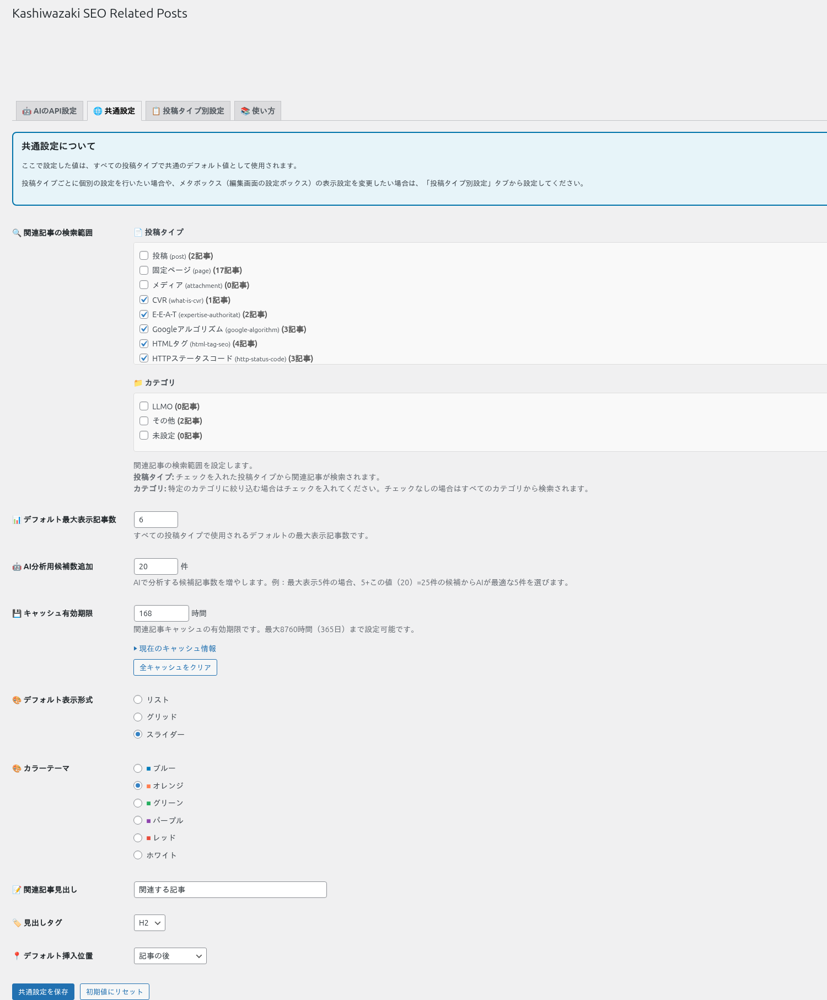

詳細設定
3階層設定、ショートコード・ウィジェット、キャッシュ管理など、Kashiwazaki SEO Related Posts の詳細な設定項目を解説します。
3階層設定
本プラグインは、グローバル・投稿タイプ別・投稿個別の3つのレベルで関連記事の設定をカスタマイズできます。下位の設定は上位の設定をオーバーライドします。

設定の優先順位
グローバル設定（最低優先） - サイト全体に適用されるデフォルト設定です。表示形式、カラーテーマ、表示件数などの基本設定を行います。
投稿タイプ別設定（中優先） - 投稿（post）、固定ページ（page）、カスタム投稿タイプごとに異なる設定を適用できます。グローバル設定を上書きします。
投稿個別設定（最高優先） - 投稿編集画面のメタボックスから、特定の投稿に対して個別の設定を適用できます。すべての上位設定を上書きします。
| 設定レベル | 設定可能な項目 |
|---|---|
| グローバル | 表示形式、カラーテーマ、表示件数、表示位置、OpenAI APIキー |
| 投稿タイプ別 | 表示形式、カラーテーマ、表示件数、関連記事の有効/無効 |
| 投稿個別 | 手動で関連記事を選択、表示/非表示の切替、表示形式の個別設定 |
多くの場合、グローバル設定のみで十分です。特定の投稿タイプや投稿に対して異なる表示が必要な場合にのみ、下位レベルの設定を使用してください。
投稿個別設定（メタボックス）
投稿編集画面のメタボックスから、投稿ごとに関連記事をカスタマイズできます。
| 設定項目 | 説明 |
|---|---|
| 関連記事の手動選択 | AIの自動提案を上書きして、手動で関連記事を選択できます。 |
| 関連記事の非表示 | 特定の投稿で関連記事セクションを非表示にします。 |
| 表示形式の個別設定 | グローバル・投稿タイプ別設定とは異なる表示形式を適用できます。 |
ショートコード
関連記事を任意の場所に手動で挿入するには、ショートコードを使用します。
基本的な使い方
[kashiwazaki_related_posts]パラメーター付き
[kashiwazaki_related_posts count="5" layout="grid" theme="blue"]| パラメーター | 説明 |
|---|---|
| count | 表示件数（デフォルト: グローバル設定値） |
| layout | 表示形式。list / grid / slider から選択（デフォルト: グローバル設定値） |
| theme | カラーテーマ。blue / green / red / purple / orange / gray から選択 |
ショートコードはウィジェットエリアやテンプレートファイル内でも使用可能です。テンプレートファイルで使う場合は <?php echo do_shortcode('[kashiwazaki_related_posts]'); ?> と記述してください。
ウィジェット
ウィジェットエリアに関連記事を表示するには、WordPress管理画面の 外観 > ウィジェット から「Kashiwazaki SEO Related Posts」ウィジェットを追加します。
| ウィジェット設定 | 説明 |
|---|---|
| タイトル | ウィジェットのタイトル（例: 「関連記事」） |
| 表示件数 | ウィジェットに表示する関連記事の件数 |
| 表示形式 | リスト / グリッド から選択（ウィジェットではスライダー非推奨） |
キャッシュ管理
AI分析の結果はWordPressのTransient APIを使用してキャッシュされます。キャッシュにより、OpenAI APIへの不要なリクエストを防ぎ、ページ表示速度を維持します。
| 項目 | 詳細 |
|---|---|
| キャッシュ方式 | WordPress Transient API |
| キャッシュ対象 | AI類似度分析の結果（投稿ごと） |
| 保存先 | wp_options テーブル（オブジェクトキャッシュ利用時はメモリ） |
| 手動クリア | 設定画面の「キャッシュクリア」ボタンで即座に削除可能 |
キャッシュをクリアすると、次回のページ表示時にOpenAI APIへのリクエストが発生し、APIコストが発生します。大量の投稿がある場合は、キャッシュクリアのタイミングに注意してください。
AJAXハンドラー
本プラグインは6つのAJAXハンドラーを使用して、管理画面での非同期操作を実現しています。
| 機能 | 説明 |
|---|---|
| AI分析の実行 | 投稿のAI類似度分析をバックグラウンドで実行します。 |
| 関連記事の取得 | 分析結果から関連記事リストを取得します。 |
| 手動選択の保存 | 投稿個別で手動選択した関連記事を保存します。 |
| キャッシュクリア | 指定した投稿または全投稿のキャッシュを削除します。 |
| 設定の保存 | 投稿タイプ別・投稿個別の設定を非同期で保存します。 |
| プレビュー | 関連記事の表示プレビューを生成します。 |